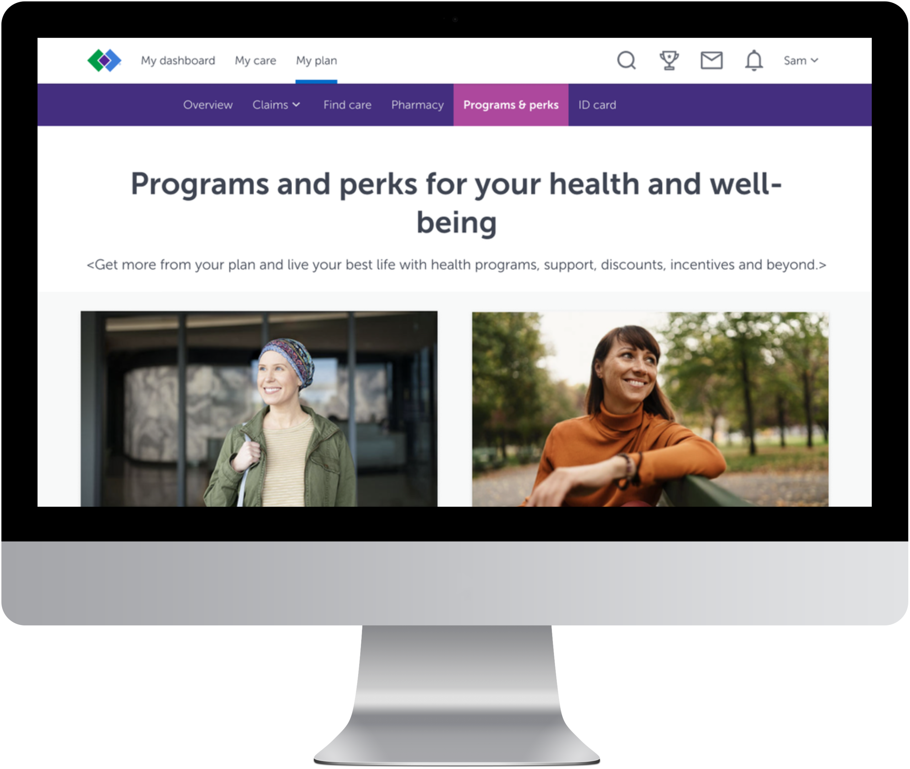
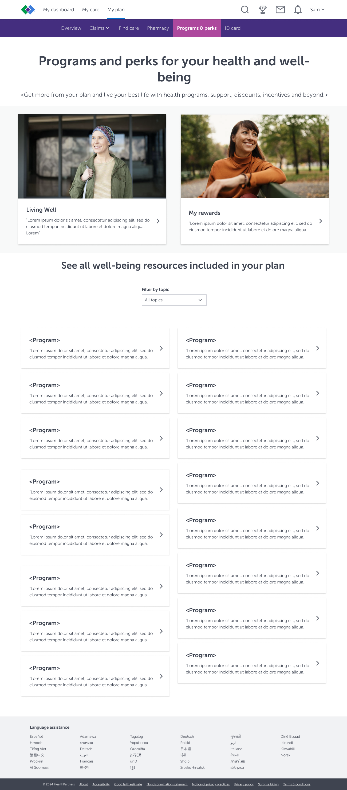
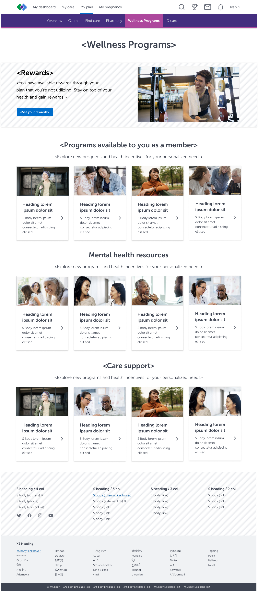
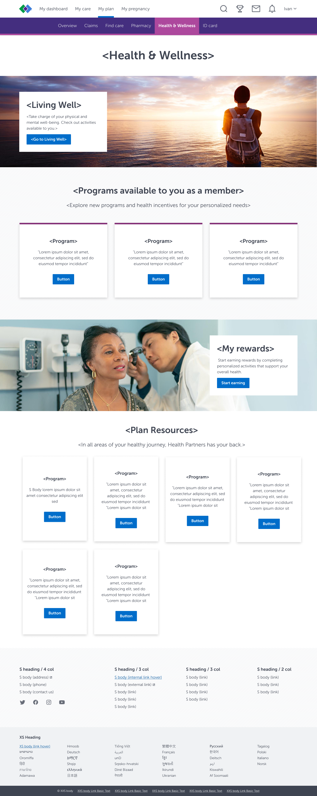
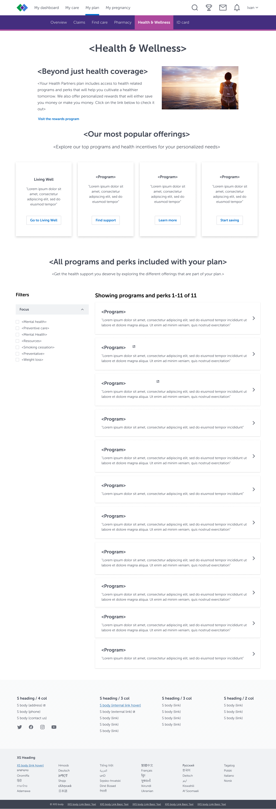

Health Partners is a nonprofit integrated health care organization based in Bloomington, Minnesota. They provide care, insurance, research, and education for patients and members across the upper Midwest. The organization serves over 1.2 million medical and dental health plan members and is one of the largest consumer-governed health care organizations in the country.
The goal was to take the existing Member Programs & Perks pages and redesign them to be more intuitive, visually consistent, and accessible. Below is a comparison of the original page alongside the final redesigned version.
Before
After

Digital Health • Patient-facing Touchpoints
The process began with a content audit of the existing member programs pages, followed by stakeholder interviews and competitive analysis. From there, I moved into wireframing low-fidelity layouts, gathered feedback through design reviews, and iterated toward a high-fidelity solution that aligned with the updated brand system.



Moderated Usability Tests • Live Prototype Walkthroughs
Moderated usability testing was conducted with a group of Health Partners members. Participants were asked to complete key tasks on the redesigned prototype — such as locating specific programs and understanding eligibility — while I observed pain points and gathered qualitative feedback. Insights were synthesized and used to refine the final design.
The final redesign introduced a cleaner layout with better content hierarchy, improved navigation between program categories, and full responsiveness across device sizes. The visual language was brought into alignment with Health Partners' updated brand guidelines, creating a cohesive experience for members exploring their programs and perks.